十期初会，且共奔涌
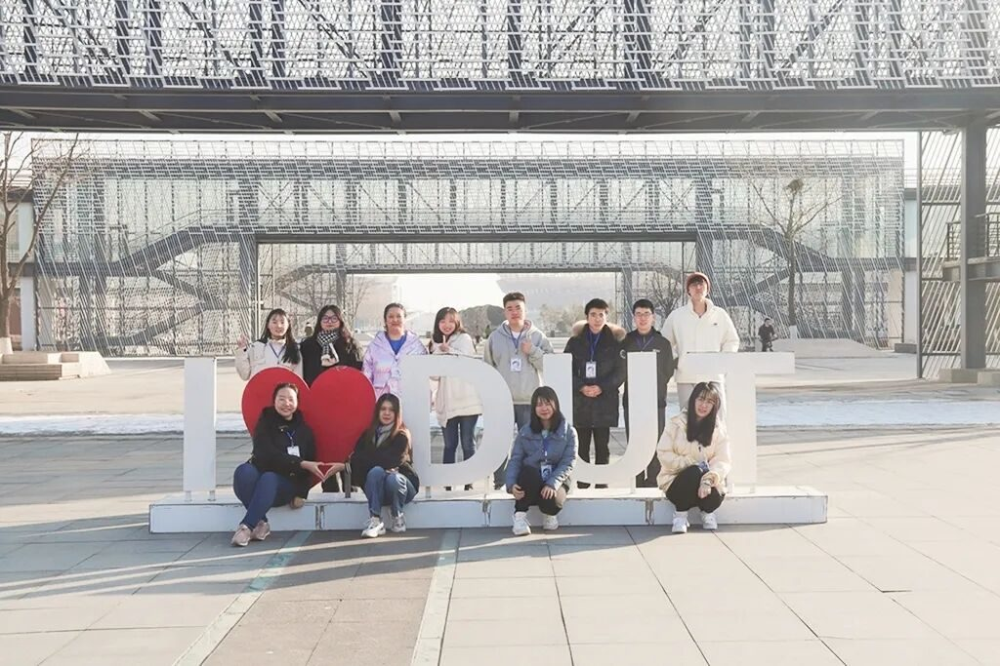
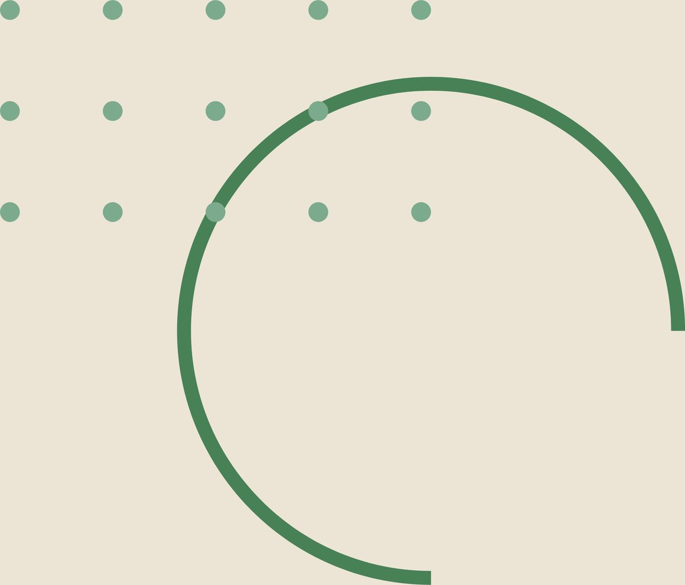
行
者
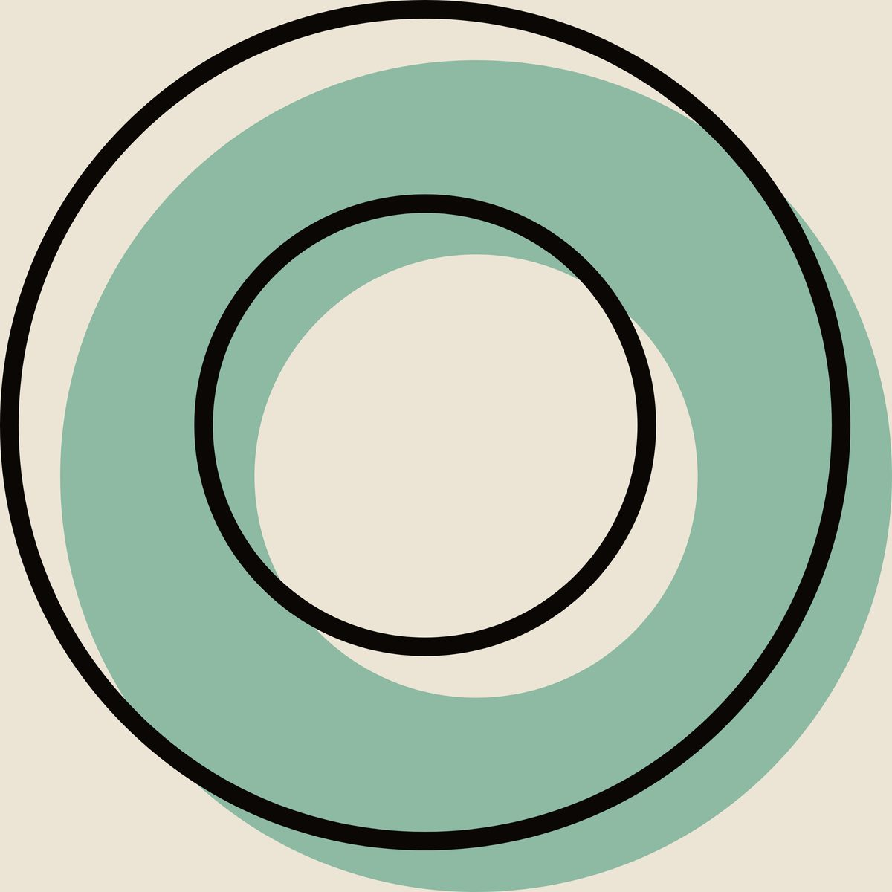
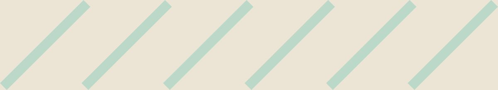
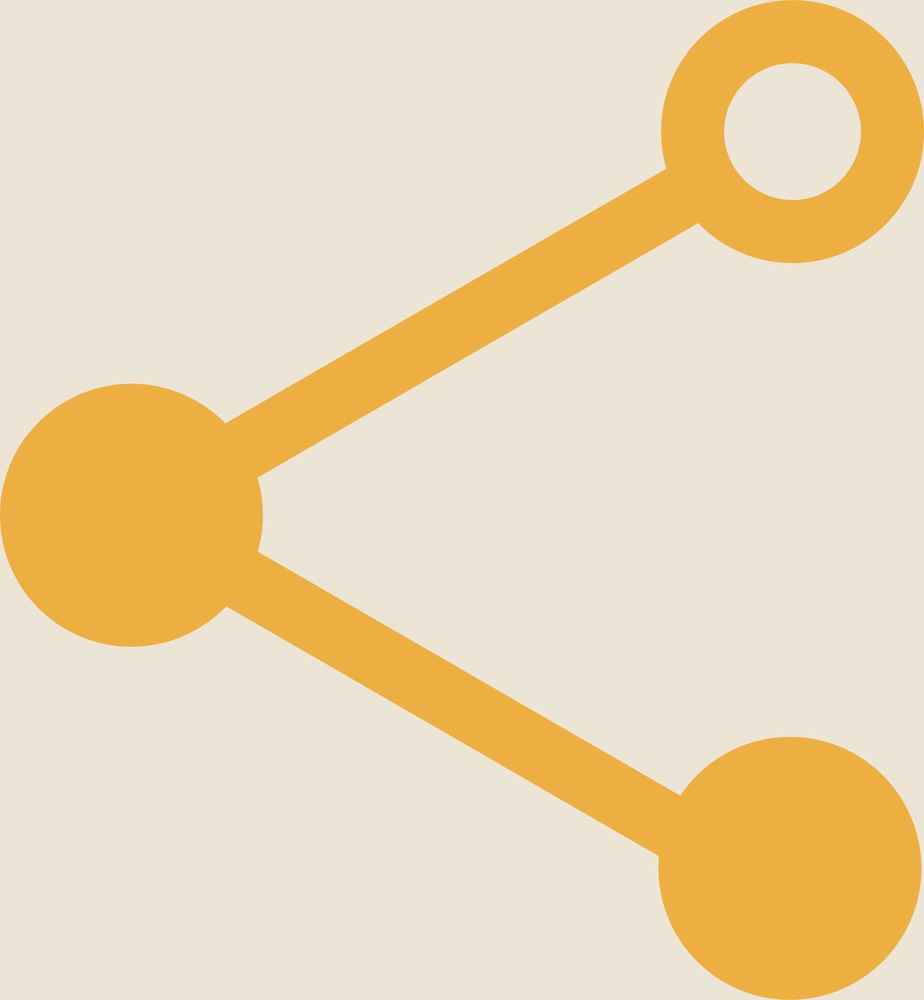
无
疆
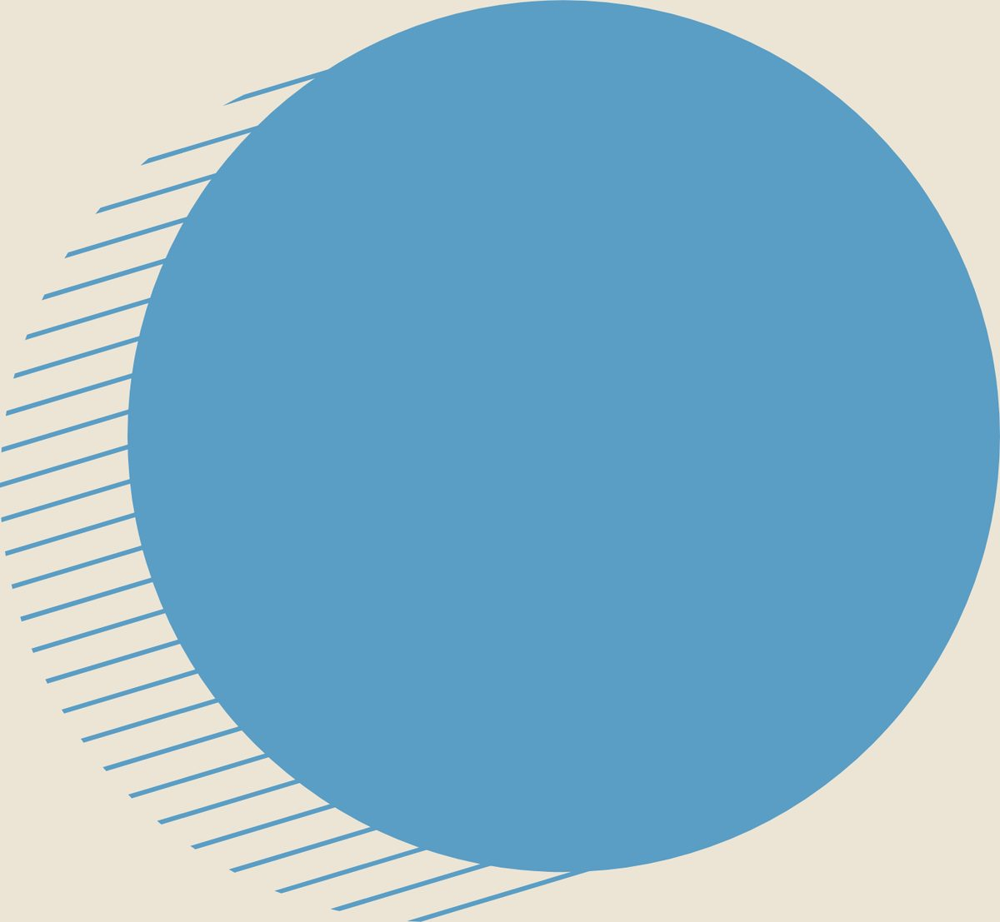
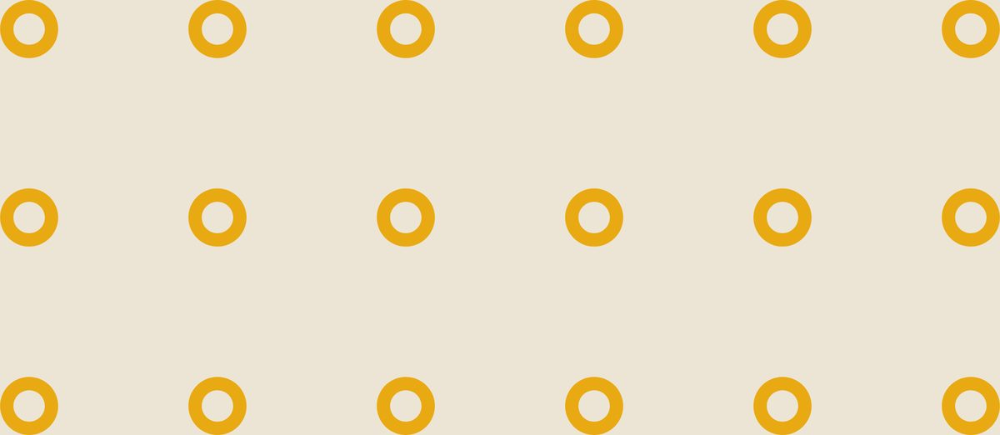
作为团队中唯一一名21级小萌新
刚刚加入这个大家庭
又激动又紧张
但见面会的氛围、
每次调研前后的讨论
让我很快的走进了这个团队
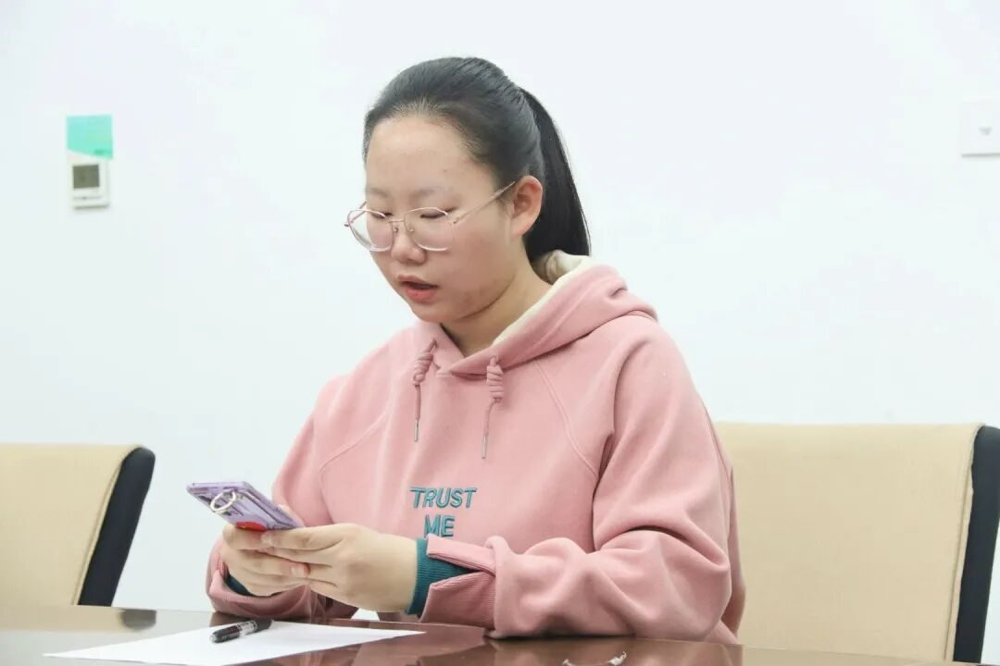
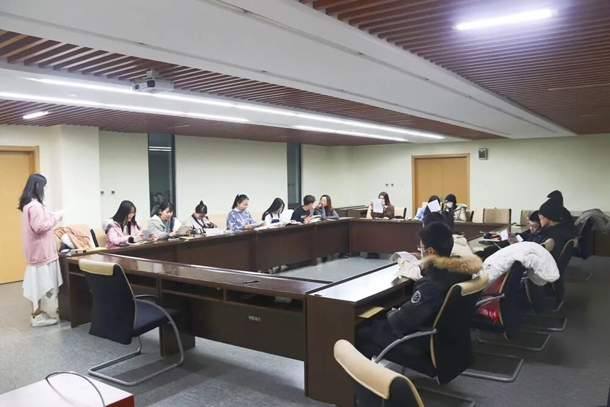
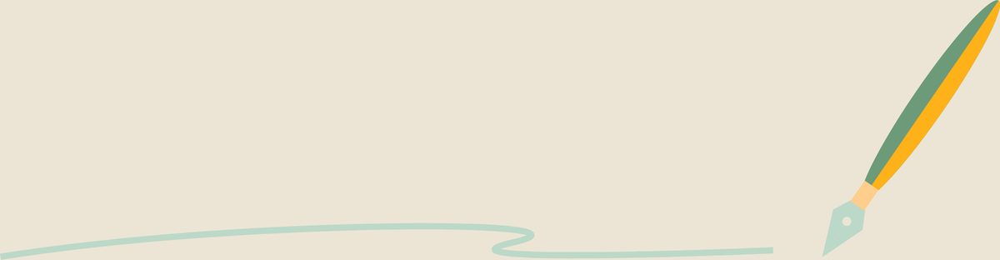
山
水
同
行
/ / 扬州之行
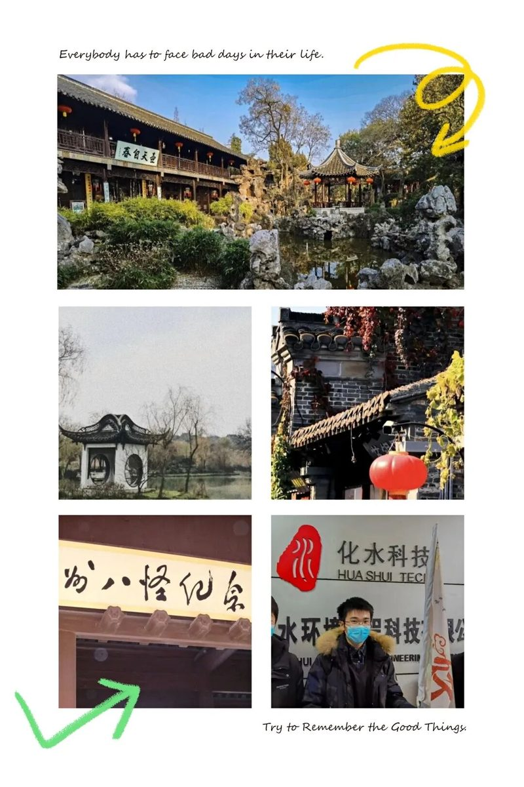
自瘦西湖的潋滟之行，至东关街的人间烟火，观个园的石与竹。循迹扬州山水人文。看的不仅仅是风景。
访长者前辈，有悉心介绍，有耐心讲解，更有文化与智慧的感染。
///
/ / 南阳之行
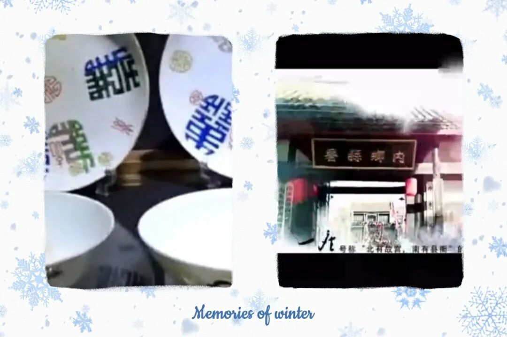
AR探访内乡县衙，探的是古迹，访的是廉政文化。
古瓷博物馆之行，透过玻璃展台与古瓷相望，感受千年间风起云落。
///
/ / 张掖之行
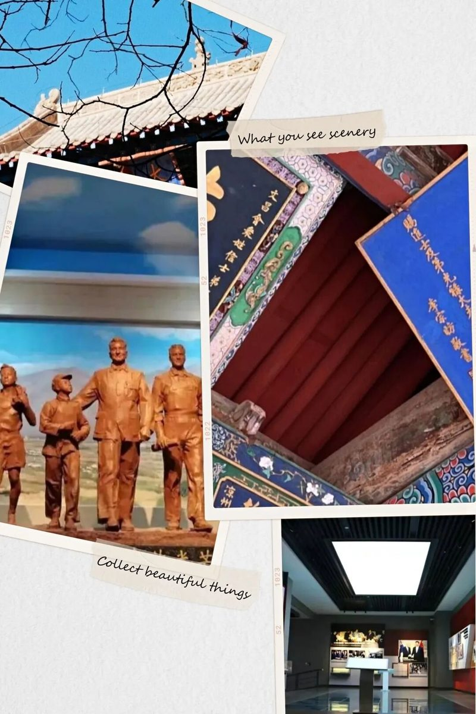
丝路伴黄沙，天涯共知己。
风雨飘摇年代，被新西兰友人艾黎赋予了特殊含义的文物，让我感受到和平与信仰编织而成的丝路魂。
武威文庙与西夏博物馆之行将停留在历史课本中的神秘的西夏文化展现在我们眼前。
///
且
行
且
感
/ / 文化之旅
走过淮左好景与豫南佳韵，循迹千年丝路。一路观得古迹，赏得风景，品得文化。江南烟雨中走来的文化力量，青砖黛瓦下的廉政之风，瓷梦千年的尤新记忆，丝路精神的包容文化，还有西夏鸿儒的翩翩文风，无一不是文化之旅的旨意。
///
/ / 成长之旅
第一次调研讨论时还有些幼稚的提问和参与连线采访的紧张，到后来有更深刻的思考，能提出更有价值的提问，敢于在连线时在评论区提问是成长。
推送排版效果在修改中一次次提高是成长。
总结官Q语言的斟酌，排版的细致，科普官Q内容要求的熟悉，这些都是成长。
///
/ / 热爱之旅
排版编辑时学姐的帮助和鼓励，紧张和自我怀疑时的打气，各有千秋的前辈榜样，轻松幽默的团队氛围，深夜放毒的分享，突然出现的废话文学，云吃扬州早茶的打趣，让我越来越热爱这里。一起走过的一切，无一不印证着此行属实是热爱之旅。
///
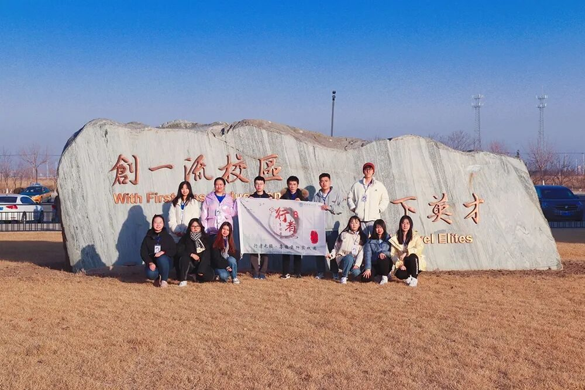
此行于行者无疆
是回望来路
探寻初心之旅
是重逢，是再寻
是与老友茶叙后携手再启程
于我是文化之旅
是成长之旅
是热爱之旅
旅程将尽，初心不改
仍怀期待，满腔热爱！
来源 | 行者无疆实践团
文字 | 崔雨琪
排版 | 高懿玢
审核 | 温兆琪 朱华玮